Videos
All videos on youtube.com/@RADlab_Oxford.
Press


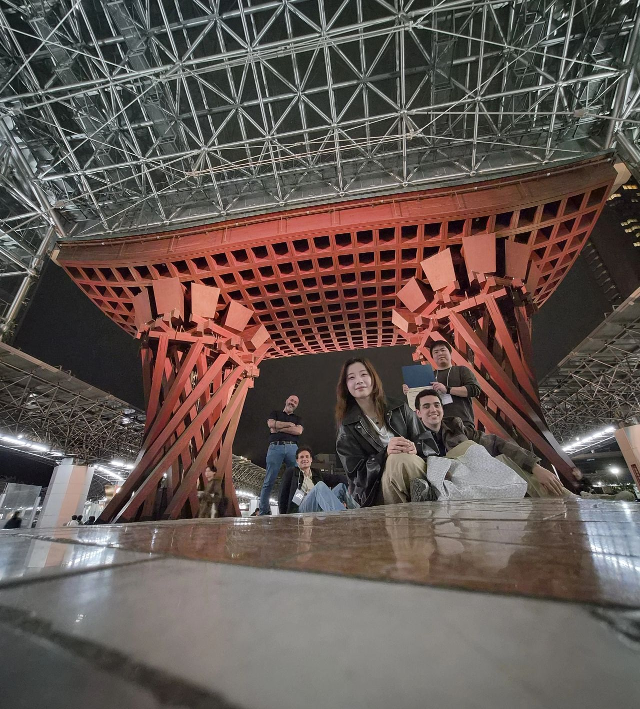
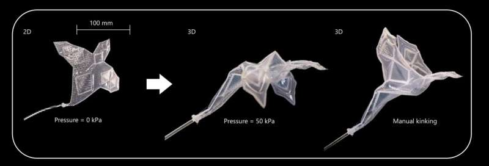


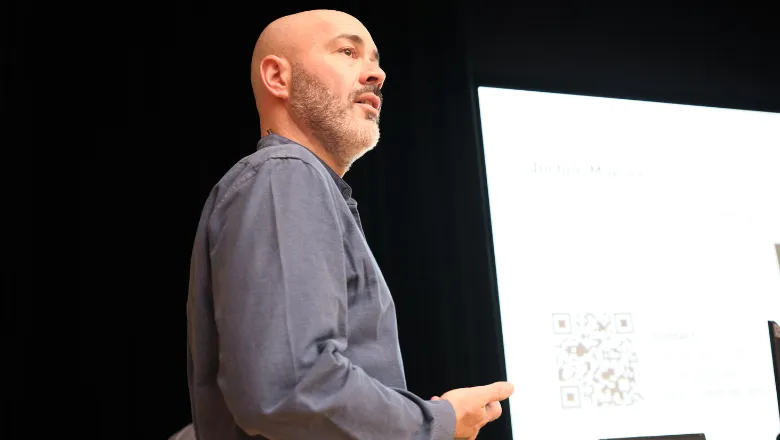
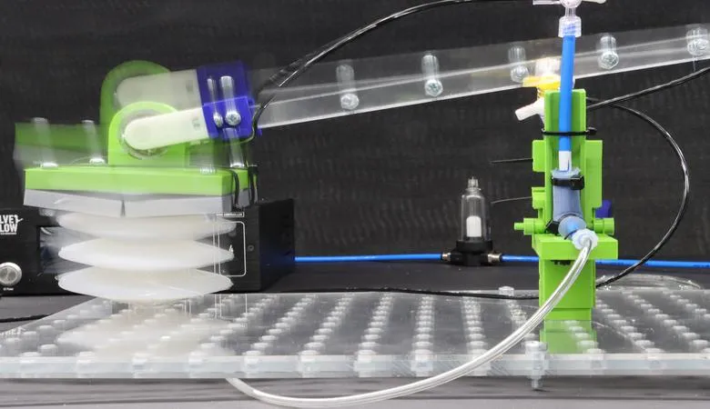
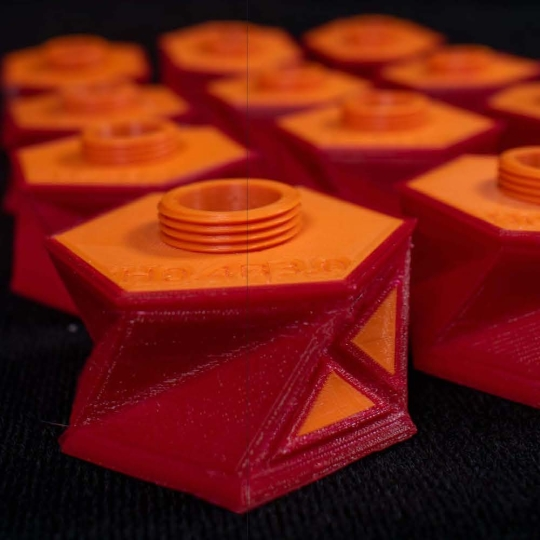
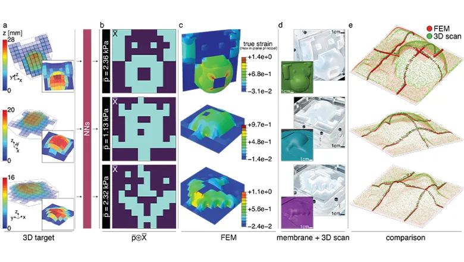

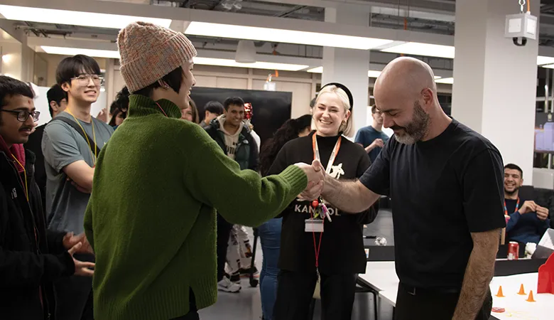
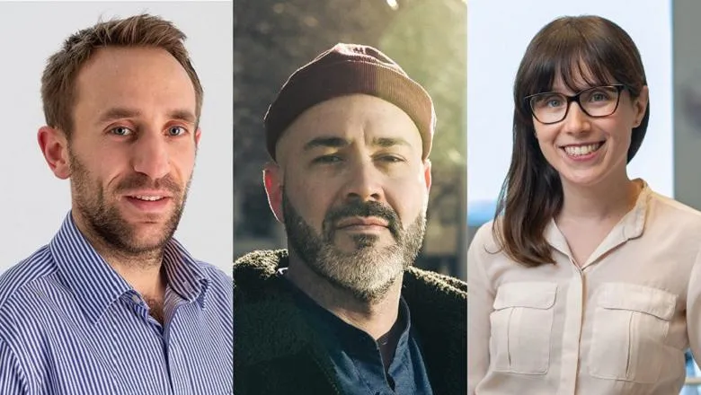
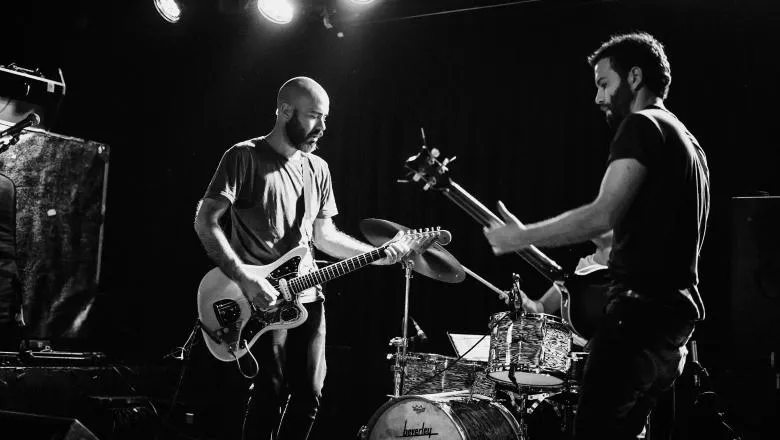
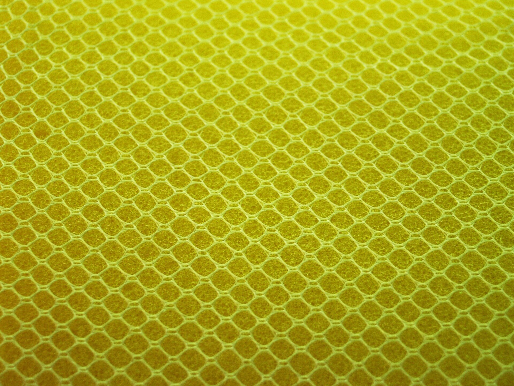
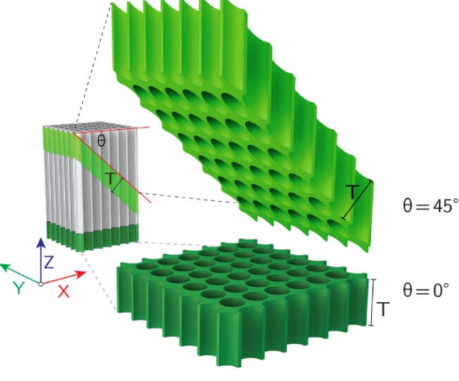
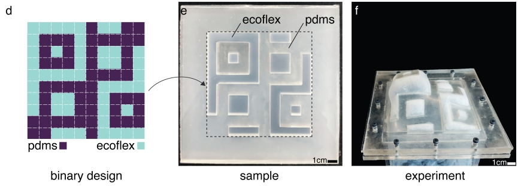
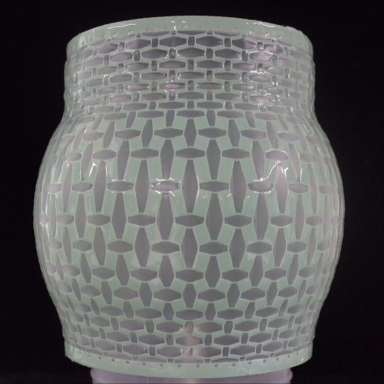
Talks & events


Videos from the lab: things that snapped, things that didn't, and what we learned either way.
Videos
All videos on youtube.com/@RADlab_Oxford.
Press













Talks & events